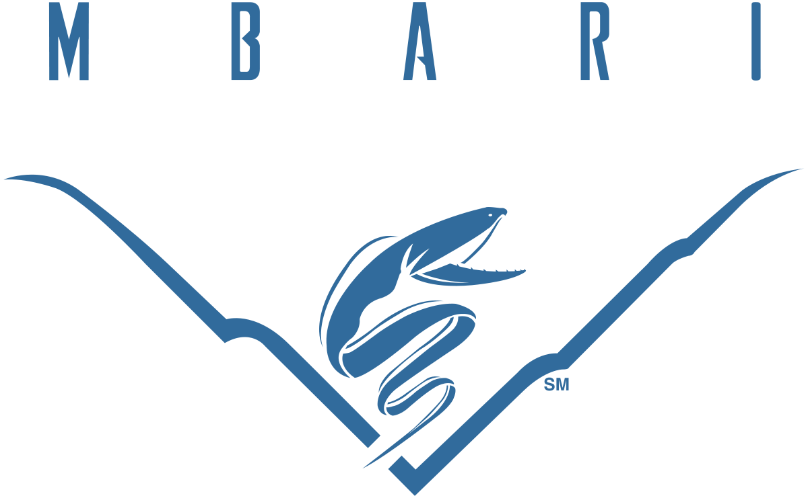

CSUMB Computer Science graduate looking software engineering
opportunities. I have an artistic background and look to use it to
enrich any project I am on.
I started studying piano and music theory when I was four years old
and eventually went on to pick up many more instruments. Through music,
I was given several leadership and international performance
opportunities. At some point, I started learning about film, digital
editing, and graphic design. This lead to freelance work with local
businesses, creating advertisement flyers and internet marketing
material during high school. My first exposure to programming came when
working with Adobe After Effects' expression commands. A few years
later, I was one of the first students in my High School's history to
form and enroll in an AP computer science course. My study and practice
of computer science continues to this day.
CSUMB (B.S.) Computer Science (2019)
- Concentration in Software Engineering
- In-major GPA: 3.8; Dean’s List all semesters
-
Coursework: Advanced Machine Learning; Data Science; Multivariate
Calculus; Mathematics in Computing; Computer Architecture; Discrete
Mathematics; Algorithms;
The Computer Science major provides students with an understanding of
fundamental computer science concepts coupled with applied information
technology skills. Students are prepared for careers in computing
technology industries or for graduate program.
Software Engineering Intern - LanguageLine Solutions (2018)
I worked in a team to develop a solution that allowed salespeople to
easily access relevant data replacing previous system that forced
salespeople to login to multiple systems. The old system consisted of
an ElasticSearch database and a Salesforce database. A sales person
would have to log on to both systems and cross check account
information by manually matching account IDs. The solution I developed
was an Odata Client that allowed the ElasticSearch data to seamlessly
appear in the Salesforce client. This solution saves employees hours a
week by streamlining their work flows. I also developed an
administration control system for the Odata Client allowing company
admins to maintain and add functionality to the client.
RetinaNet Object Detection on MBARI Station M Images (2019)

-
Train RetinaNet neural network on cloud TPUs via GCP to assist MBARI
researchers identify and track benthic life with Station M Images.
-
Develop Python and Bash scripts that establish pipeline to prepare
and train MBARI’s Station M data on GCP, labeling 2000+ new images.
-
Document process and issues faced in working with RetinaNet and the
cloud TPU architecture for future students or employees working
with MBARI.
Technology Used: Python3, Tensorflow, Bash, Docker, Linux, GCP
See Project
Audio Reactive Graphics Engine (2019) In Progress
-
Built in C++ and OpenGL/GLFW, engine extracts frequency data from
audio which is used to alter physically based rendering parameters
in real time.
-
Implements Fast Fourier Transformations making frequency data available to users.
-
Shaders allow for custom model loading and lighting parameters.
Technology Used: C++, OpenGL, GLFW, GLSL, BASS, Assimp
V1 Demo
See Project
ghostvendor.net (2019) In Progress
-
Built and deployed artist's portfolio website, enabling consolidation of the artist's
contact and portfolio information to a single location.
-
Custom server configuration, built from base Ubuntu server instance, allows for
site log processing and interpretation.
-
Further functionality is awaiting the addition of more art. However, there is currently
a system in place for multi-page comic viewing awaiting the comic pages themselves.
Technology Used: Javascript, Nodejs, Expressjs, Ubuntu, Bash, UIkit
See Website (Slightly NSFW)